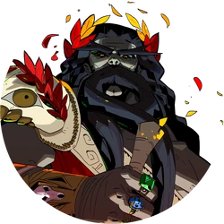
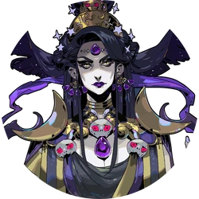
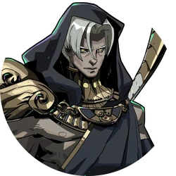
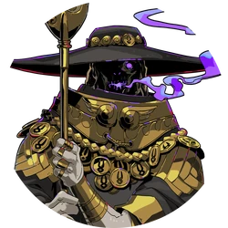
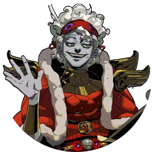
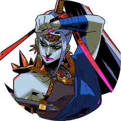
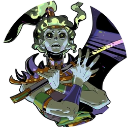
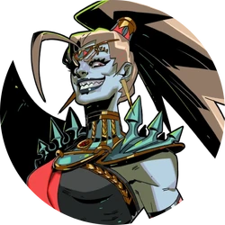
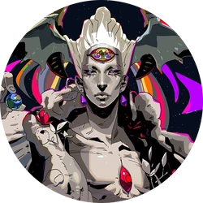

Keterangan: tidak semua karakter tercantum dalam website ini

Zagreus
Zagreus mrupakan pangeran Underworld sekaligus protagonis dari Hades. Setelah mengetahui ibunya pergi, Zagreus memutuskan untuk mencoba melarikan diri dari Underworld menuju dunia fana meskipun ayahnya, Hades menentang.
Perjalanan Zagreus dalam usahanya melarikan diri penuh dengan rintangan, dia harus menghadapi jiwa penghuni tartarus, jiwa pahlawan di Elysium, kemarahan dewa dan bahkan Hades itu sendiri. Sebagai Penghuni Underworld, Zagreus mampu bangkit dari kematiannya dengan kembali ke House of Hades melalui sungai Styx
Namun, diperjalanan yang penuh rintangan itu Zagreus juga bertemu dengan banyak makhluk lainnya, termasuk dewa-dewa olympus yang ternyata tidak mengetahui keberadaan Zagreus pada awalnya.

Hades
Hades adalah penguasa House of Hades sekaligus ayah Zagreus.
Dia adalah dewa yang baik hati namun tirani yang bertanggung jawab untuk memerintah Dunia Bawah, tempat yang suram dan rumah jiwa-jiwa orang mati. Dia memiliki tugas untuk memerintahkan dan memelihara ketertiban di dalamnya, menentukan penempatan dan hukuman orang mati dan mendengarkan petisi dari roh orang mati.
Disebagian besar interaksinya, Hades sering terlihat kesal dengan upaya melarikan diri Zagreus. Sehingga tidak jarang dia akan mencemooh Zagreus yang baru keluar dari sungai Styx detelah tewas diperjalananya
Hades menjadi boss terakhir yang harus dihadapi oleh Zagreus ketika mencapai stage terakhir.

Nyx
Nyx, atau kadang dipanggil sebagai "Ibu malam" merupakan personifikasi dari malam sekaligus ibu dari takdir, Charon, Nemesis, Thanatos, Hypnos dan beberapa dewa lainnya. Dia juga menjadi ibu angkat Zagreus.
Bersama Hades, Nyx ikut memerintah dunia bawah. Dia memberi nasihat, arahan, dan meninjau pekerjaan para penghuni House of Hades seperti pada interaksinya dengan Megaera dan Dusa.
Dia adalah individu yang baik hati dan keibuan terhadap Zagareus, namun memeperlakukan anak-anak nya dengan jarak emosional dan profesionalitas.
Nyx adalah karakter yang pertama kali mendukung upaya melarikan diri Zagreus, dia bahkan memberinya cermin malam yang membantu perjalanan Zagreus.

Thanatos
Thanatos adalah personifikasi dari kematian, putra Nyx dan saudara kembar Hypnos.
Sebagai personifikasi kematian, Thanatos memiliki banyak tugas yang mengharuskan dirinya untuk pergi ke dunia fana, sehingga menjadikannya sebagai salah satu karakter yang tidak begitu sering ditemui
Thanatos dikenal sebagai individu yang penyendiri, perfeksionis dan memiliki etos kerja yang tinggi. Dia juga melakukan sumpah setia kepada Hades, namun berakhir melanggar sumpahnya karena membantu Zagreus melarikan diri.
Terkadang Thanatos akan muncul ditengah permainan saat Zagreus mencoba melarikan diri. Dia akan memberikan tantangan membunuh musuh terbanyak, dan jika Zagreus memenangkan tantangan tersebut Thanatos akan memberi Centaur Heart yang merupakan item penambah max HP.

Charon
Charon adalah tukang perahu dunia bawah dan putra Nyx. Dia bertanggung jawab untuk mengangkut jiwa orang mati untuk menyebrangi sungai dan menuju Underworld.
Dalam mitologi sendiri, Charon menerima biaya satu obol dari tiap jiwa. Oleh karena itu setelah seseorang meninggal maka didalam mulutnya harus diisi dengan satu obol, karena jika Charon tidak menerima pembayaran maka dia akan membiarkan jiwa orang tersebut berkeliaran di tepi sungai Styx.
Sedangkan untuk didalam game, Charon juga berperan sebagai penjaga toko yang menjual berbagai item dan kemampuan.
Dia merupakan sosok yang misterius penuh teka-teki. Meskipun dia berperan sebagai tukang perahu, namun tampaknya saudara-saudaranya termasuk Thanatos cukup takut dengannya.

Hypnos
Hypnos merupakan personifikasi dari tidur, putra Nyx sekaligus saudara kembar Thanatos.
Dia mengawasi prosesi jiwa orang mati yang baru tiba ke hadapan Hades, dan memeriksa nama mereka di daftarnya. Dia sering terlihat tidur di tempat kerja hingga sempat diceramahi Thanatos.
Karena posisi nya yang selalu berada di dekat tepi sungai Styx, dia akan menjadi karakter pertama yang ditemui Zagreus yang baru kembali ke House of Hades, dan terkadang dia juga akan menyambut Zagreus dengan nasihat atau sindiiran tentang hal yang membuat Zagreus terbunuh.
Terlepas dari pekerjaannya yang terlibat dengan jiwa orang mati, Hypnos adalah karakter yang ceria dan terlihat ramah.

Megaera
Megaera adalah salah satu dari tiga Furies, sekaligus kakak perempuan Tisiphone dan Alecto. Dia bertanggung jawab untuk menghukum pezina, pelanggar sumpah, dan pencuri.
Dia adalah individu yang percaya diri, keras kepala, dan berusaha menyelesaikan tugasnya dengan sempurna.
Sebenarnya Megaera tidak ingin menghentikan upaya Zagreus untuk melarikan diri, namun dia tidak senang dengan segala kekacauan yang ditimbulkan oleh Zagreus di Underworld.
Bersama kedua saudarinya, Megaera ditugaskan oleh Hades untuk menghalangi upaya melarikan dirinya Zagreus.

Tisiphone
Tisiphone adalah salah satu Furies sekaligus saudara tengah Megaera dan Alecto. Dia bertnggung jawab untuk menghukum orang-orang yang melakukan pembunuhan.
Diantara para Furies, Tisiphone adalah yang paling emosional dan bermental tidak stabil, dan tampaknya kata "murder" menjadi satu-satunya kata yang dapat dia katakan.
Sama seperti Megaera dan Alecto, Tisiphone sangat menganggap serius tugasnya.
Namun, tidak seperti karakter lainnya yang setelah tewas akan ditelan oleh sungai Styx. Setelah berhasil dikalahkan Tisiphone dan Alecto akan menghilang dengan menjadi sekumpulan kelelawar, hal ini mengimplikasikan bahwa dia tidak diizinkan untuk memasuki House of Hades.

Alecto
Alecto adalah salah satu Furies sekaligus adik perempuan Megaera dan Tisiphone. Dia bertanggung jawab untuk menghukum orang-orang yang melakukan hal-hal mengerikan atas dorongan nafsu.
Diantara para Furies, Alecto merupakan yang paling berbahaya. Dia senang saat melukai Zagreus karena darahnya yang berwarna merah, tidak seperti dewa lain yang darahnya berwarna emas. Sehingga diapun memberi julukan "Red Blood" kepada Zagreus.
Alecto adalah individu yang maniak kekerasan, sadis, dan provokatif. Namun, terlepas dari sifatnya yang seperti itu dia cukup protektif terhadap Tisiphone
Pada awal permainan, Alecto tidak akan muncul hingga Megaera berhasil dikalahkan beberapa kali.

Chaos
Chaos adalah personifikasi dari kekosongan.
Dia adalah pengamat sekaligus penjaga rahasia, dia juga sering melontarkan komentar sensitif dan kritik terhadap karakter yang ditemui Zagreus.
Kemunculannya dalam game cukup acak, dia cenderung memberi buff dan debuff diwaktu yang beramaan. Sehingga pemain harus dapat mempertimbangkan buff apa yang akan dipilih.